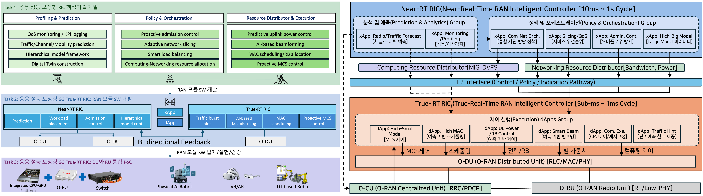
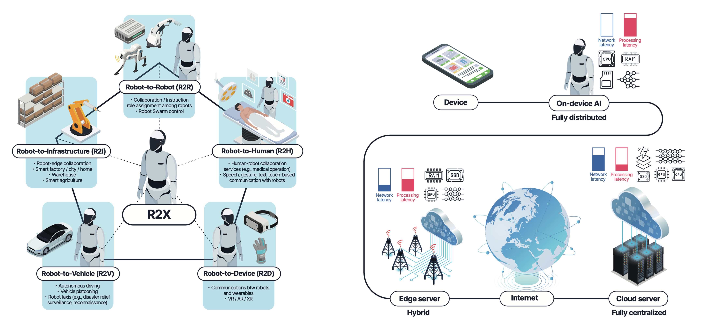
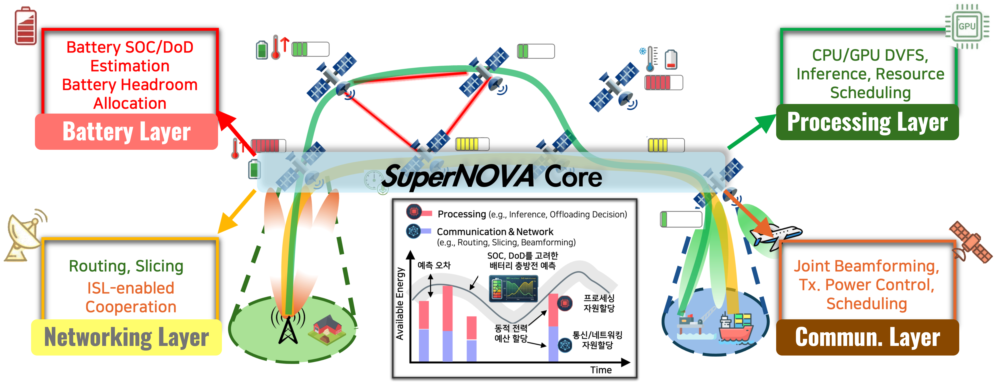

Research
6G AI-RAN Architecture

As 6G networks evolve to support mission-critical applications such as physical AI robots, immersive VR/AR, and digital twins, the seamless integration of artificial intelligence and radio access networks (AI-RAN) becomes essential. While existing Open RAN (O-RAN) studies have largely focused on control loops operating on scales of 10ms or longer (e.g., Near-RT RIC), they often manage radio and computing resources independently, failing to provide application-level performance guarantees under strict sub-millisecond latency constraints. To address this, we study a novel 6G AI-RAN system architecture featuring a hierarchical framework that integrates a Near-Real-Time (Near-RT) RIC for proactive policy orchestration and a True-Real-Time (True-RT) RIC for sub-millisecond execution. Our research focuses on the joint distribution and optimization of computing (e.g., GPU/CPU, DVFS) and networking (e.g., bandwidth, power) resources through the development of advanced AI-driven xApps and dApps. The developed architecture and algorithms are evaluated by various experiments using a Proof of Concept (PoC) testbed integrating CPU-GPU platforms, O-DU/O-RU systems, and real-world edge devices.
Reference Papers
Connected Physical AI

As physical AI systems, such as autonomous robots and vehicles, increasingly rely on diverse Robot-to-Everything (R2X) communications, deploying advanced Large Language Models (LLMs) on these agents is crucial for intelligent and complex decision-making. However, existing LLM deployment strategies face a critical trade-off: fully on-device execution with lightweight models suffers from slow processing and limited reasoning capacity, while fully centralized cloud execution incurs prohibitive network latency. To bridge this gap, we study "Connected Physical AI" with a primary focus on collaborative on-device and cloud LLM inference utilizing speculative decoding. Our research proposes a novel framework that seamlessly integrates adaptive computing, networking, and LLM architecture scaling. By synergizing lightweight auto-regressive generation on mobile edge devices with high-capacity, non-auto-regressive verification on cloud servers, we jointly optimize computing and network resources. The developed algorithms are evaluated across various hybrid edge-cloud environments to ensure low latency, high throughput, and energy-efficient operations tailored to the dynamic requirements of physical AI systems.
Reference Papers
Satellite Edge Computing

As global connectivity demands rise, Low-Earth Orbit (LEO) satellite networks equipped with edge computing capabilities are emerging as a key solution to provide ubiquitous services with reduced latency. However, deploying advanced AI and computing tasks directly on satellites is highly challenging due to severe battery limitations, dynamic energy harvesting conditions, and the complex interplay between onboard processing and inter-satellite communication. Existing studies often optimize these domains independently, which can lead to inefficient energy use and rapid battery depletion. To address this, we study an energy-aware LEO satellite onboard framework for integrated resource Allocation. Our research focuses on the joint control of multi-layer resources—optimizing routing and Inter-Satellite Link (ISL) cooperation in the networking layer, alongside inference scheduling and CPU/GPU DVFS in the processing layer. Crucially, these are tightly coupled with real-time battery State of Charge (SOC) and Depth of Discharge (DoD) estimations in the battery layer. The developed framework and algorithms are evaluated through comprehensive simulations that account for dynamic energy budgets and orbital variations, ensuring sustainable and high-performance operations for satellite edge computing.